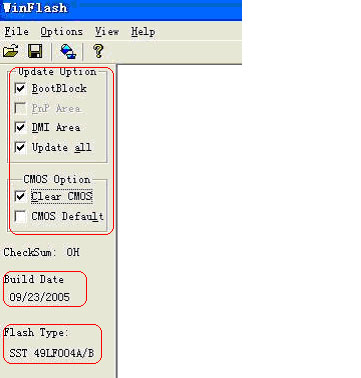

| 磐正系列主板刷BIOS图解 |
| 发布：磐正中国客服中心 日期：06/18/07 |
|
|
|
一。MagicFlash在线刷新BIOS
(1)从主板驱动光盘中安装MagicFlash工具。 http://www.epox.cn/upimg/1182146701.jpg （2）安装好后，可以在系统桌面上看到MagicFlash 快捷图标“ http://www.epox.cn/upimg/1182146762.jpg ”。双击打开，出现刷新工具，如图：http://www.epox.cn/upimg/1182146936.jpg
从图中可以看到主板现有BIOS的信息，这时只要您的机子已经联上网络，点击图中的“C”字符，就开始从网上搜寻更新的BIOS文件。
（3）搜索后得到新BIOS信息，如图 http://www.epox.cn/upimg/1182146981.jpg
在图中您可以了解到： ①“Mainboard Model(s)……”表示可以使用该BIOS的主板列表； ②“New Bios found!!”表示已经找到比现在使用的BIOS更新的BIOS文件； ③符号“D”表示可以下载。 如果找不到更新的BIOS，界面则会提示您“现在所使用的BIOS为最新版本”
（4）点击符号“D”后，开始下载BIOS文件，下载完成后，界面如图： http://www.epox.cn/upimg/1182147051.jpg 图中“BIOS Download Finish!!”表示BIOS下载完毕；符号“F”表示进行BIOS刷新。
（5）点击“F”开始刷新BIOS，跳出以下界面： http://www.epox.cn/upimg/1182147131.jpg
询问“确定要对BIOS进行刷新？”。选择“是”。然后跳出清空CMOS界面：
http://www.epox.cn/upimg/1182147281.jpg
询问“清空现有CMOS吗？”。选择“是”。之后MagicFlash便会自动刷新BIOS，完成后便会提示你重启。
（6）重新启动计算机后，先按“Del”键进入到BIOS中，恢复一次BIOS默认设置和优化设置。
二、 WinFlash在操作系统中刷新BIOS （1）打开WinFlash工具，您可以在Magic Flash安装目录中找到 http://www.epox.cn/upimg/1182147396.jpg 双击打开。如图：
http://www.epox.cn/upimg/1182147512.jpg
（2）在图中您可以看到现在使用的BIOS版本日期以及BIOS芯片的型号。在刷新前请勾选相关的刷新选项  http://www.epox.cn/upimg/1182147631.jpg
（3）打开要刷新的BIOS文件，如图：
http://www.epox.cn/upimg/1182147747.jpg
（4）按下“打开”按钮后,出现刷新对话框,如图： http://www.epox.cn/upimg/1182147955.jpg
按下“Update”按钮即会开始刷新。刷新完毕便会提示您重新启动计算机。
（5）重新启动计算机后，先按“Del”键进入到BIOS中，恢复一次BIOS默认设置和优化设置。
三、DOS下手动刷新主板BIOS （1）将BIOS刷新工具 http://www.epox.cn/upimg/1182148184.jpg 与要更新的BIOS文件http://www.epox.cn/upimg/1182148242.jpg 加载在DOS启动盘中，也可以放在FAT格式的分区里。
（2）启动到DOS界面下，输入“C:\awd859 9npa5923.bin /sn/py”。如图： http://www.epox.cn/upimg/1182148294.jpg 注意：刷新BIOS命令参数就是“盘符:\BIOS刷新工具名（空格）BIOS文件名.bin（空格）/sn/py”。 例如：您如果使用 来刷新 ，那刷新命令就为：“C:\awdflash 9npa5a18.bin /sn/py”。 （3）输入刷新命令后，回车，出现刷新界面。因为已经加了“/sn/py”参数，所以你无需做任何操作便会自动刷新。刷新过程如图：
http://www.epox.cn/upimg/1182148368.jpg
在刷新的过程中千万不可以断电，否则会造成BIOS损坏，轻则重新刷，重则更换BIOS芯片。
（4）刷新完毕后，会要求您按“F1”进行计算机重新启动，如图： http://www.epox.cn/upimg/1182148429.jpg （5）重新启动计算机后，先进入到BIOS中，恢复一次BIOS默认设置和优化设置。
*注意： （1）主板找到对应的BIOS文件进行刷新。 （2）BIOS刷新过程中一定不可以断电。 （3）每次刷新完毕按F1重新启动，先进入到CMOS设置中，将默认设置和优化设置默认一遍。可以避免正确刷新BIOS后却进不了系统的情况。
|